Refining complex challenges into seamless digital experiences with a focus on craft and storytelling.
I'm Chen Parnasa, a Product Designer with a B.Sc. in Software Engineering.
My background gives me a unique structural lens, allowing me to deconstruct complex systems and navigate technical constraints while pushing the boundaries of what's possible in design. I specialize in creating intuitive interfaces that make sophisticated technology feel effortless.
Beyond the screen, I am genuinely interested in exploring different languages and cultures. Exploring diverse perspectives allows me to approach problems with an open mind and a more inclusive outlook. Whether I’m traveling or observing the world through my phone, this curiosity shapes how I design, helping me stay receptive to new ideas and human-centered solutions.
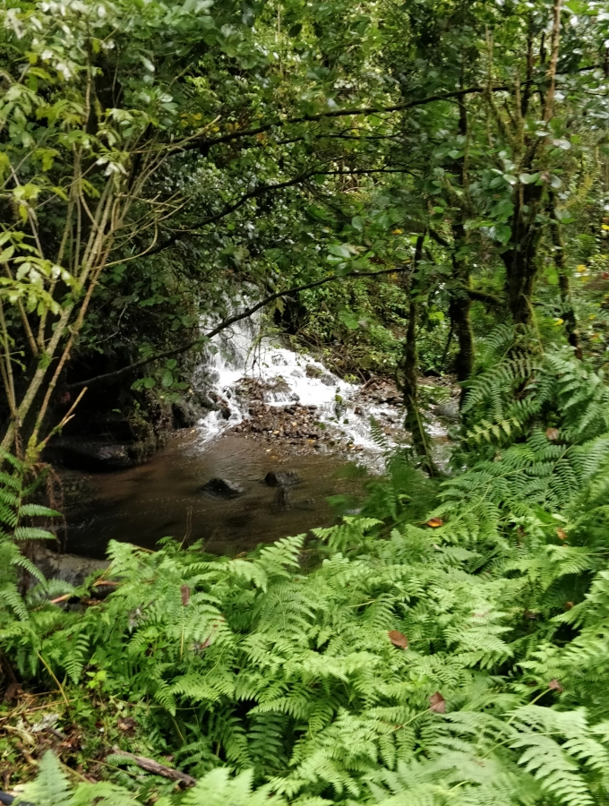
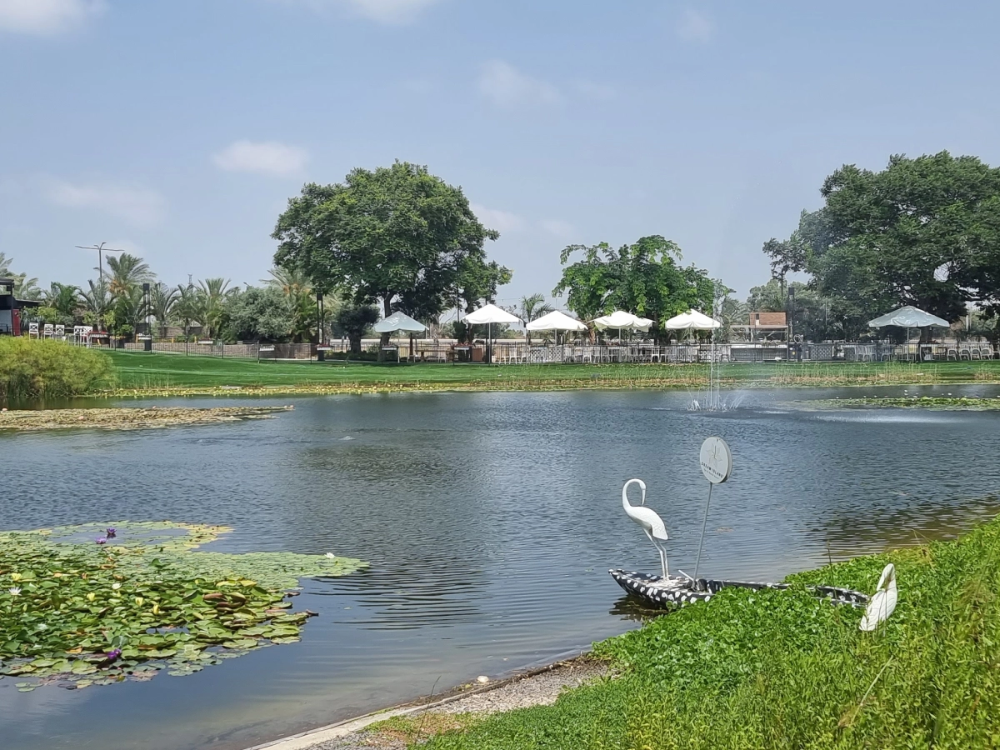
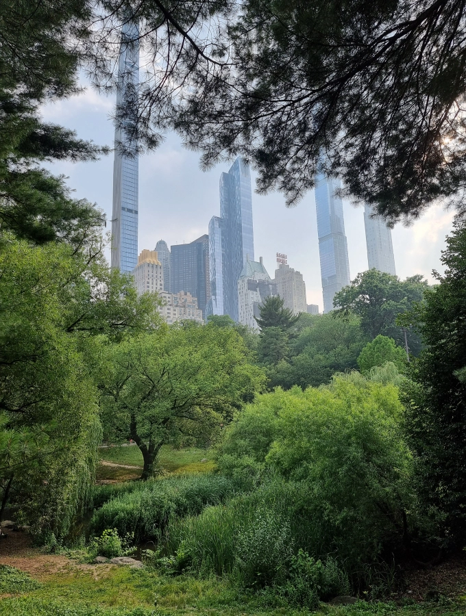
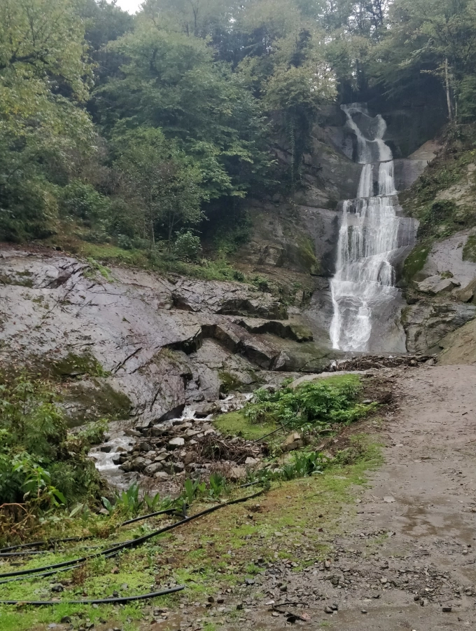
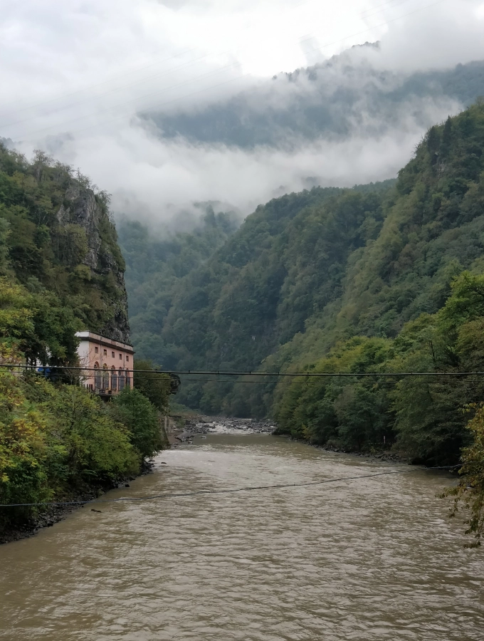
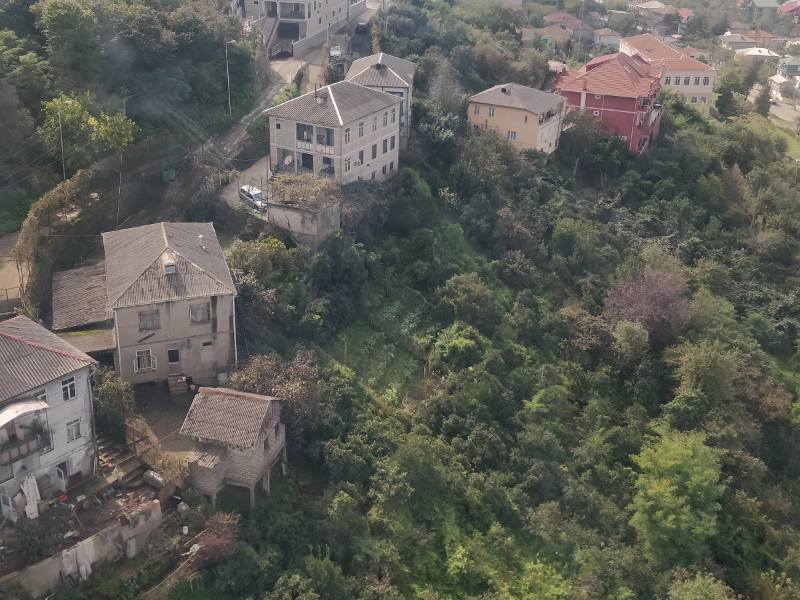
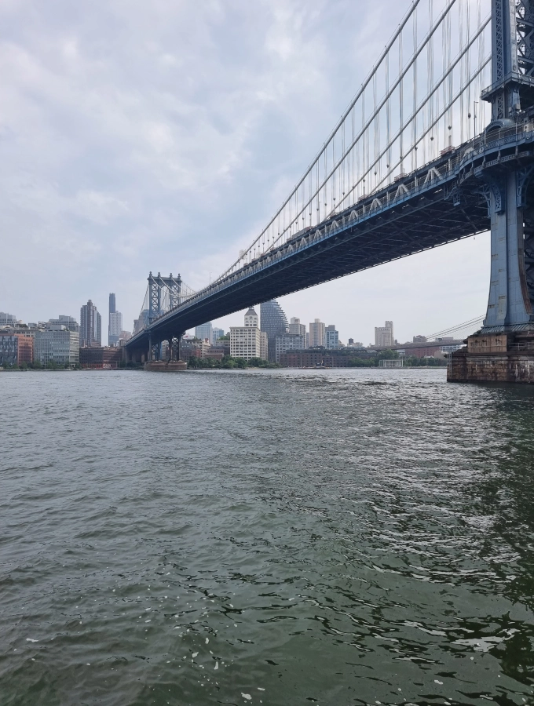
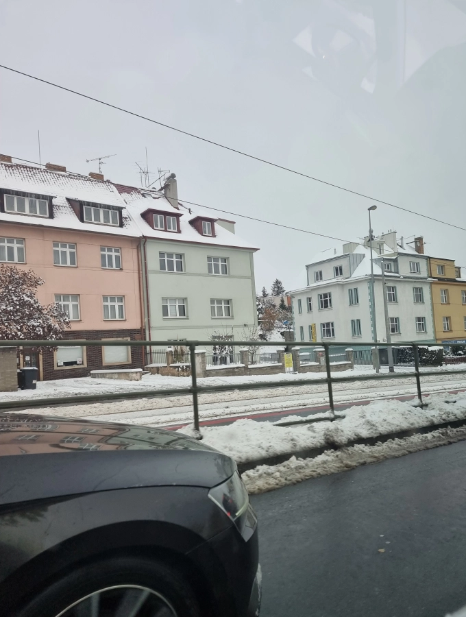
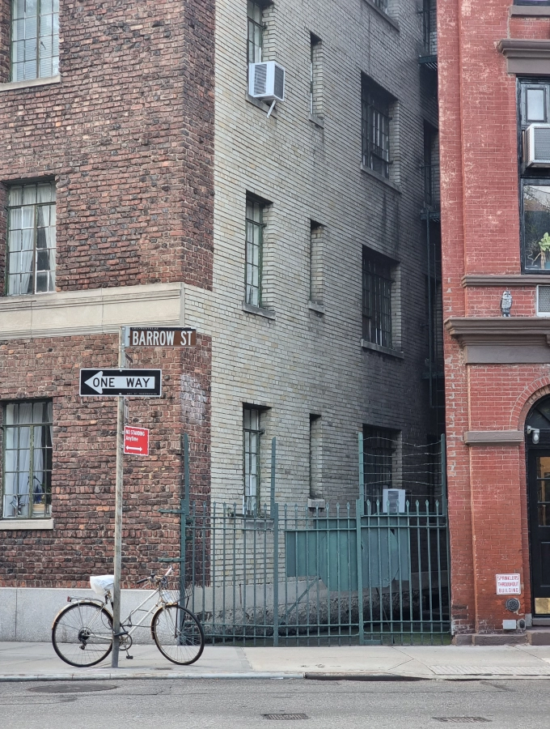
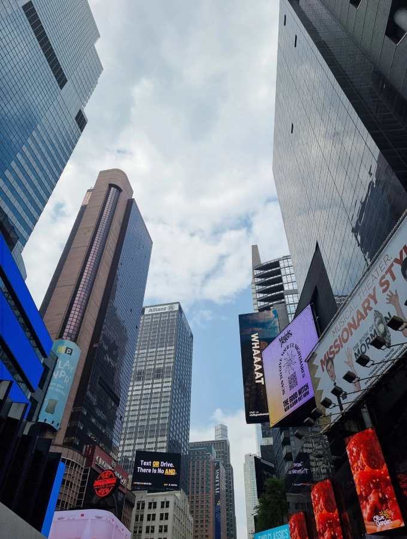
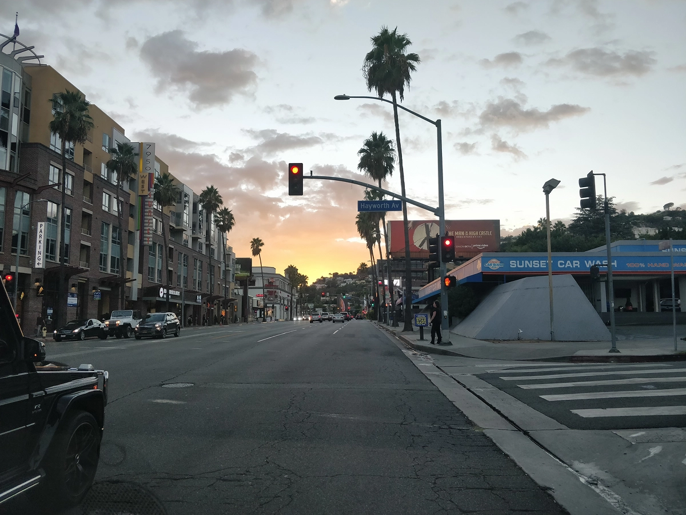
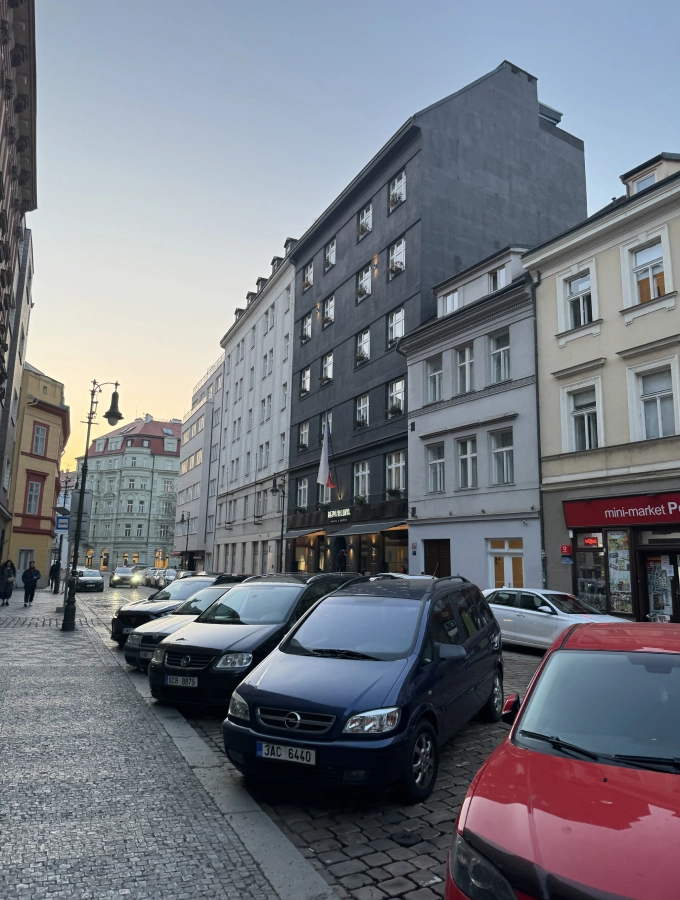
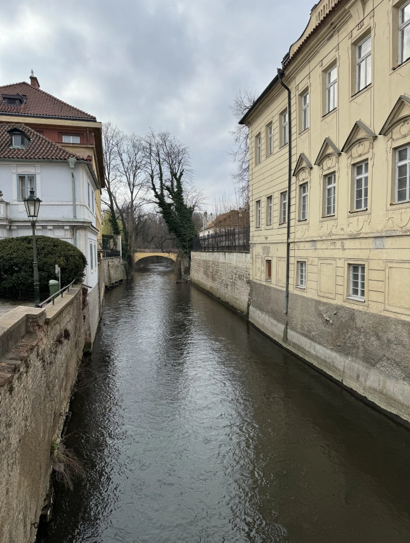